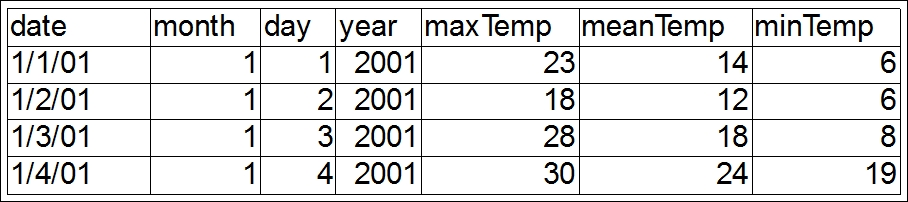
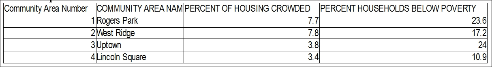
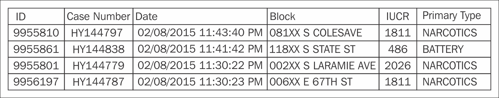

In this recipe, we'll see how to run deep learning models on various sets of data to detect crime in the city of Chicago.
Please download the following datasets from the following locations:
Weather data: https://github.com/ChitturiPadma/datasets/blob/master/chicagoAllWeather.csv.
Census data:https://github.com/ChitturiPadma/datasets/blob/master/chicagoCensus.csv.
Crime data: https://github.com/ChitturiPadma/datasets/blob/master/chicagoCrimes10k.csv.
The sample records (with a few columns) in the datasets look as follows:
The sample rows in weather data:

The sample rows in census data:

The sample rows in crime data:

Include the dependency ai.h2o" % "h2o-genmodel" % "3.10.0.7 in the build.sbt file.
The code for loading the datasets and fetching the required records for joining the preceding datasets chicagoAllWeather.csv, chicagoCensus.csv, chicagoCrimes10k.csv looks like the following:
import hex.deeplearning.DeepLearningModel
import hex.deeplearning.DeepLearningModel.DeepLearningParameters
import hex.deeplearning.DeepLearningModel.DeepLearningParameters
.Activation
import hex.tree.gbm.GBMModel
import hex.{Model, ModelMetricsBinomial}
import org.apache.spark.SparkContext
import org.apache.spark.h2o.{H2OContext, H2OFrame}
import org.apache.spark.sql.{DataFrame, SQLContext}
import org.joda.time.DateTimeConstants._
import org.joda.time.format.DateTimeFormat
import org.joda.time.{DateTimeZone, MutableDateTime}
import water.MRTask
import water.fvec.{Chunk, NewChunk, Vec}
import water.parser.{BufferedString, ParseSetup}
import water.support.{H2OFrameSupport, ModelMetricsSupport,
SparkContextSupport, SparklingWaterApp}
import java.net._
import org.apache.spark._
class RefineDateColumn(val datePattern: String,
val dateTimeZone: String) extends
MRTask[RefineDateColumn] {
// Entry point
def doIt(col: Vec): H2OFrame = {
val inputCol = if (col.isCategorical) col.toStringVec else col
val result = new H2OFrame(
doAll(Array[Byte](Vec.T_NUM, Vec.T_NUM, Vec.T_NUM, Vec.T_NUM,
Vec.T_NUM, Vec.T_NUM, Vec.T_NUM, Vec.T_NUM),
inputCol).outputFrame(
Array[String]("Day", "Month", "Year", "WeekNum", "WeekDay",
"Weekend", "Season","HourOfDay"),
Array[Array[String]](null, null, null, null, null, null,
H2O_ChicagoCrimeAppNew_H2O.SEASONS, null)))
if (col.isCategorical) inputCol.remove()
result
}
override def map(cs: Array[Chunk], ncs: Array[NewChunk]): Unit =
{
/* Initialize DataTime convertor (cannot be done in setupLocal
since it is not H2O serializable */
val dtFmt = DateTimeFormat.forPattern(datePattern)
.withZone(DateTimeZone.forID(dateTimeZone))
// Get input and output chunks
val dateChunk = cs(0)
val (dayNC, monthNC, yearNC, weekNC, weekdayNC, weekendNC,
seasonNC, hourNC)
= (ncs(0), ncs(1), ncs(2), ncs(3), ncs(4), ncs(5), ncs(6),
ncs(7))
val valStr = new BufferedString()
val mDateTime = new MutableDateTime()
for(row <- 0 until dateChunk.len()) {
if (dateChunk.isNA(row)) {
addNAs(ncs)
} else {
// Extract data
val ds = dateChunk.atStr(valStr, row).toString
if (dtFmt.parseInto(mDateTime, ds, 0) > 0) {
val month = mDateTime.getMonthOfYear
dayNC.addNum(mDateTime.getDayOfMonth, 0)
monthNC.addNum(month, 0)
yearNC.addNum(mDateTime.getYear, 0)
weekNC.addNum(mDateTime.getWeekOfWeekyear)
val dayOfWeek = mDateTime.getDayOfWeek
weekdayNC.addNum(dayOfWeek)
weekendNC.addNum(if (dayOfWeek == SUNDAY || dayOfWeek ==
SATURDAY) 1 else 0, 0)
seasonNC.addNum(ChicagoCrimeAppNew_H2O.getSeason(month), 0)
hourNC.addNum(mDateTime.getHourOfDay)
} else {
addNAs(ncs)
} } } }
private def addNAs(ncs: Array[NewChunk]): Unit =
ncs.foreach(nc => nc.addNA())
}
object ChicagoCrimeAppNew_H2O {
def SEASONS = Array[String]("Spring", "Summer", "Autumn",
"Winter")
def getSeason(month: Int) =
if (month >= MARCH && month <= MAY) 0 // Spring
else if (month >= JUNE && month <= AUGUST) 1 // Summer
else if (month >= SEPTEMBER && month <= OCTOBER) 2 // Autumn
else 3 // Winter
def loadData(datafile: String, modifyParserSetup: ParseSetup
=> ParseSetup = identity[ParseSetup]): H2OFrame = {
val uri = java.net.URI.create(datafile)
val parseSetup =
modifyParserSetup(water.fvec.H2OFrame.parserSetup(uri))
new H2OFrame(parseSetup, new java.net.URI(datafile))
}
def createWeatherTable(datafile: String): H2OFrame = {
val table = loadData(datafile)
// Remove first column since we do not need it
table.remove(0).remove()
table.update()
table
}
def createCensusTable(datafile: String): H2OFrame = {
val table = loadData(datafile)
// Rename columns: replace ' ' by '_'
val colNames = table.names().map( n => n.trim.replace(' ',
'_').replace('+','_'))
table._names = colNames
table.update()
table
}
def createCrimeTable(datafile: String): H2OFrame = {
val table = loadData(datafile, (parseSetup: ParseSetup) => {
val colNames = parseSetup.getColumnNames
val typeNames = parseSetup.getColumnTypes
colNames.indices.foreach { idx =>
if (colNames(idx) == "Date") typeNames(idx) = Vec.T_STR
}
parseSetup
})
// Refine date into multiple columns
val dateCol = table.vec(2)
table.add(new RefineDateColumn("MM/dd/yyyy hh:mm:ss a",
"Etc/UTC").doIt(dateCol))
// Update names, replace all ' ' by '_'
val colNames = table.names().map( n => n.trim.replace(' ',
'_'))
table._names = colNames
// Remove Date column
table.remove(2).remove()
// Update in DKV
table.update()
table
}
def main(args:Array[String]): Unit = {
val conf = new SparkConf()
.setMaster("spark://master:7077")
.setAppName("H2O_ChicagoCrimeApp")
val sc = new SparkContext(conf)
implicit val h2oContext = H2OContext.getOrCreate(sc)
implicit val sqlContext = new SQLContext(sc)
import h2oContext._
import h2oContext.implicits._
import sqlContext.implicits._
// Loading Weather Data
val weatherDataTable = asDataFrame(createWeatherTable
("hdfs://namenode:9000/chicagoAllWeather.csv"))
val censusDataTable = asDataFrame(createCensusTable
("hdfs://namenode:9000/chicagoCensus.csv"))
val crimeDataTable = asDataFrame(createCrimeTable
("hdfs://namenode:9000/chicagoCrimes10k.csv"))
weatherDataTable.registerTempTable("chicagoWeather")
censusDataTable.registerTempTable("chicagoCensus")
crimeDataTable.registerTempTable("chicagoCrime")
val crimeWeather = sqlContext.sql(
"""SELECT
|a.Year, a.Month, a.Day, a.WeekNum, a.HourOfDay, a.Weekend,
a.Season, a.WeekDay,
|a.IUCR, a.Primary_Type, a.Location_Description,
a.Community_Area, a.District,
|a.Arrest, a.Domestic, a.Beat, a.Ward, a.FBI_Code,
|b.minTemp, b.maxTemp, b.meanTemp,
|c.PERCENT_AGED_UNDER_18_OR_OVER_64, c.PER_CAPITA_INCOME,
c.HARDSHIP_INDEX,
|c.PERCENT_OF_HOUSING_CROWDED,
c.PERCENT_HOUSEHOLDS_BELOW_POVERTY,
|c.PERCENT_AGED_16__UNEMPLOYED,
c.PERCENT_AGED_25__WITHOUT_HIGH_SCHOOL_DIPLOMA
|FROM chicagoCrime a
|JOIN chicagoWeather b
|ON a.Year = b.year AND a.Month = b.month AND a.Day = b.day
|JOIN chicagoCensus c
|ON a.Community_Area = c.Community_Area_Number""".stripMargin)
val crimeWeatherDF:H2OFrame = crimeWeather
// Transform all string columns into categorical
val crimeWeatherDataFrame = asDataFrame(crimeWeatherDF)
crimeWeatherDataFrame.select("Year","Month","Day","WeekNum",
"Season","IUCR").show(10)
}
}
The following is the output:
+----+-----+---+-------+------+----+
|Year|Month|Day|WeekNum|Season|IUCR|
+----+-----+---+-------+------+----+
|2015| 1| 23| 4|Winter|null|
|2015| 1| 23| 4|Winter|4625|
|2015| 1| 23| 4|Winter| 320|
|2015| 1| 23| 4|Winter|1310|
|2015| 1| 23| 4|Winter| 610|
|2015| 1| 23| 4|Winter|2210|
|2015| 1| 23| 4|Winter| 470|
|2015| 1| 23| 4|Winter|1305|
|2015| 1| 23| 4|Winter| 486|
|2015| 1| 23| 4|Winter| 820|
+----+-----+---+-------+------+----+
Now, let's try to run the GBM model on the crimeWeatherDF and collect the model metrics with the following code:
def main(args:Array[String]) {
// Previous code
H2OFrameSupport.allStringVecToCategorical(crimeWeatherDF)
val keys = Array[String]("train.hex", "test.hex")
val ratios = Array[Double](0.8, 0.2)
val frs = H2OFrameSupport.split(crimeWeatherDF, keys, ratios)
val (train, test) = (frs(0), frs(1))
// Build GBM model and collect model metrics
val gbmModel = GBMModel(train, test, 'Arrest)
val (trainMetricsGBM, testMetricsGBM) = binomialMetrics(gbmModel, train, test)
println(
s"""Model performance:
| GBM:
| train AUC = ${trainMetricsGBM.auc}
| test AUC = ${testMetricsGBM.auc}
""".stripMargin) }
def GBMModel(train: H2OFrame, test: H2OFrame, response: String, ntrees:Int = 10, depth:Int = 6, family: DistributionFamily = DistributionFamily.bernoulli)
(implicit h2oContext: H2OContext) : GBMModel = {
import h2oContext.implicits._
import hex.tree.gbm.GBM
import hex.tree.gbm.GBMModel.GBMParameters
val gbmParams = new GBMParameters()
gbmParams._train = train
gbmParams._valid = test
gbmParams._response_column = response
gbmParams._ntrees = ntrees
gbmParams._max_depth = depth
val gbm = new GBM(gbmParams)
val model = gbm.trainModel.get
model
}
def binomialMetrics[M <: Model[M,P,O], P <: hex.Model.Parameters, O <: hex.Model.Output]
(model: Model[M,P,O], train: H2OFrame, test: H2OFrame):(ModelMetricsBinomial, ModelMetricsBinomial) = {
(ModelMetricsSupport.modelMetrics(model,train), ModelMetricsSupport.modelMetrics(model, test))
}
The following is the output:
Model performance:
GBM:
train AUC = 0.9182010072171471
test AUC = 0.9366698161864178
In the following code snippet, we train a deep neural network to predict the likelihood of an arrest for a given crime as follows:
def main(args:Array[String]) {
// Previous code
// Build Deep Learning model and collect model metrics
val dlModel = DLModel(train, test, 'Arrest)
val (trainMetricsDL, testMetricsDL) = binomialMetrics(dlModel, train,
test)
println(
s"""Model performance:
| DL:
| train AUC = ${trainMetricsDL.auc}
| test AUC = ${testMetricsDL.auc}
""".stripMargin) }
def DLModel(train: H2OFrame, test: H2OFrame, response: String,
epochs: Int = 10, l1: Double = 0.0001, l2: Double = 0.0001,
activation: Activation = Activation.RectifierWithDropout,
hidden:Array[Int] = Array(200,200))
(implicit h2oContext: H2OContext) : DeepLearningModel = {
import h2oContext.implicits._
import hex.deeplearning.DeepLearning
val dlParams = new DeepLearningParameters()
dlParams._train = train
dlParams._valid = test
dlParams._response_column = response
dlParams._epochs = epochs
dlParams._l1 = l1
dlParams._l2 = l2
dlParams._activation = activation
dlParams._hidden = hidden
// Create a job
val dl = new DeepLearning(dlParams)
val model = dl.trainModel.get
model }
The output is as follows:
Model performance:
DL:
train AUC = 0.9032203563709825
test AUC = 0.9358068689123377
Let's look at the last building block of the application, which predicts the arrest rate probability for a new crime. The function combines the Spark API to enrich each incoming crime event with census information with H2O's deep learning model, which scores the event:
case class Crime(Year: Short, Month: Byte, Day: Byte, WeekNum: Byte,
HourOfDay:Byte,
Weekend:Byte, Season: String, WeekDay: Byte,
IUCR: Short,
Primary_Type: String,
Location_Description: String,
Domestic: String,
Beat: Short,
District: Byte,
Ward: Byte,
Community_Area: Byte,
FBI_Code: Byte,
minTemp: Option[Byte],
maxTemp: Option[Byte],
meanTemp: Option[Byte])
object Crime {
def apply(date:String,
iucr: Short,
primaryType: String,
locationDescr: String,
domestic: Boolean,
beat: Short,
district: Byte,
ward: Byte,
communityArea: Byte,
fbiCode: Byte,
minTemp: Option[Byte] = None,
maxTemp: Option[Byte] = None,
meanTemp: Option[Byte] = None,
datePattern: String = "MM/dd/yyyy hh:mm:ss a",
dateTimeZone: String = "Etc/UTC"):Crime = {
val dtFmt = DateTimeFormat.forPattern(datePattern).withZone
(DateTimeZone.forID(dateTimeZone))
val mDateTime = new MutableDateTime()
dtFmt.parseInto(mDateTime, date, 0)
val month = mDateTime.getMonthOfYear.toByte
val dayOfWeek = mDateTime.getDayOfWeek
Crime(mDateTime.getYear.toShort,
month,
mDateTime.getDayOfMonth.toByte,
mDateTime.getWeekOfWeekyear.toByte,
mDateTime.getHourOfDay.toByte,
if (dayOfWeek == SUNDAY || dayOfWeek == SATURDAY) 1 else 0,
ChicagoCrimeAppNew_H2O.SEASONS(ChicagoCrimeAppNew_H2O.getSeason
(month)),
mDateTime.getDayOfWeek.toByte,
iucr, primaryType, locationDescr,
if (domestic) "true" else "false" ,
beat, district, ward, communityArea, fbiCode,
minTemp, maxTemp, meanTemp) } }
def scoreEvent(crime: Crime, model: Model[_,_,_], censusTable:
DataFrame)
(implicit sqlContext: SQLContext, h2oContext: H2OContext): Float = {
import h2oContext.implicits._
import sqlContext.implicits._
// Create a single row table
val srdd: DataFrame =
sqlContext.sparkContext.parallelize(Seq(crime)).toDF
// Join table with census data
val row: H2OFrame = censusTable.join(srdd).where('Community_Area ===
'Community_Area_Number) //.printSchema
// Transform all string columns into categorical
H2OFrameSupport.allStringVecToCategorical(row)
val predictTable = model.score(row)
val probOfArrest = predictTable.vec("true").at(0)
probOfArrest.toFloat }
def main(args:Array[String]) {
// Previous code
// Test the arrest rate probability for a new Crime.
val crimeExamples = Seq(
Crime("02/08/2015 11:43:58 PM", 1811, "NARCOTICS", "STREET",false,
422, 4, 7, 46, 18),
Crime("02/08/2015 11:00:39 PM", 1150, "DECEPTIVE PRACTICE",
"RESIDENCE",false, 923, 9, 14, 63, 11))
for (crime <- crimeExamples) {
val arrestProbGBM = 100*scoreEvent(crime,
gbmModel,
censusDataTable)(sqlContext, h2oContext)
val arrestProbDL = 100*scoreEvent(crime,
dlModel,
censusDataTable)(sqlContext, h2oContext)
println(
s"""
|Crime: $crime
| Probability of arrest best on DeepLearning: ${arrestProbDL} %
| Probability of arrest best on GBM: ${arrestProbGBM} %
|
""".stripMargin)
} }
The following is the output:
Crime:
Crime(2015,2,8,6,23,1,Winter,7,1811,NARCOTICS,STREET,false,422,4,
7,46,18,None,None,None)
Probability of arrest best on DeepLearning: 99.97552 %
Probability of arrest best on GBM: 74.49276 %
Crime: Crime(2015,2,8,6,23,1,Winter,7,1150,DECEPTIVE
PRACTICE,RESIDENCE,false,923,9,14,63,11,None,None,None)
Probability of arrest best on DeepLearning: 1.6130093 %
Probability of arrest best on GBM: 12.061813 %
Initially, all the required libraries are imported. The SparkContext and SQLContext are initialized and the chicagoAllWeather.csv, chicagoCensus.csv and chicagoCrimes10k.csv files are loaded using the hdfs://namenode:9000/chicagoAllWeather.csv line. The createWeatherTable, createCensusTable, and createCrimeTable methods invoke loadData, which creates an H2OFrame from the java.net.URI.
The RefineDateColumn class formats the date and extracts the year, month and day. The crimeWeatherDF is an H2OFrame created by selecting the required fields from the DataFrame, and all strings are converted to categorical variables using the H2OFrameSupport.allStringVecToCategorical(crimeWeatherDF) line.
The dataset is split and the splits with specified keys are stored into H2O's distributed storage. The ratios are specified as val ratios = Array[Double](0.8). Now, the table is split as per the specified keys and ratios using the val frs = H2OFrameSupport.split(crimeWeatherDF, keys, ratios) line. As per the split, frs, which is of the type Array[Frame], contains two elements where the first element has 80% of the data and the second element has 20% of the data. The 80% of the data becomes train and the remaining 20% becomes valid.
The GBMModel is built from the train and test datasets and the model metrics are obtained by invoking the binomialMetrics(dlModel, train, test) method. Also, a deep neural network is trained to predict the likelihood of an arrest for a given crime. Finally, the GBMModel and DLModel accuracy is displayed.
Once the models are ready, the scoreEvent method is invoked, which predicts the arrest rate probability for a new crime using both GBMModel and DeepLearningModel.


{kind=link}